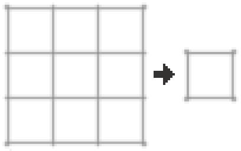
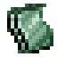
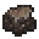
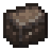
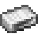

鍛鐵爐



鍛鐵爐是一種用於將鐵礦石熔鍊成生鐵方坯的裝置。鐵礦石包含赤鐵礦、褐鐵礦和磁鐵礦。這些礦石都可以用鍛鐵爐熔化成鑄鐵。
鍛鐵爐
多方塊結構: tfc:bloomery
最基礎的鍛鐵爐結構。鍛鐵爐方塊可以用右鍵開啟或關閉。
最大的鍛鐵爐可以同時在容納 24 塊鐵礦石和 24 塊木炭，每層煙囪可以容納礦石木炭各 8 個。可以在最基礎的鍛鐵爐結構上額外搭建兩層煙囪來達到最大容量。
礦石和燃料只能從鍛鐵爐頂部的煙囪中投入。
將物品新增到鍛鐵爐中。
鍛鐵爐中的礦石和木炭數量必須相等。鍛鐵爐需要大半天的時間來將鐵熔化。當鍛鐵爐塊熄滅時就表示完成了。在鍛鐵爐中熔化的每 100 mB 鐵礦石都會轉化為一個方坯。用鎬反覆挖掘方坯就能獲得生鐵方坯。
方坯
多方塊結構
一個方坯，充滿了鍛鐵.


第二級
生鐵方坯還必須在砧上打造成精鐵方坯。

第二級
在砧上進一步打造精鐵方坯就能獲得鍛鐵錠了。
鐵匠的筆記
- 如果投入鍛鐵爐的物品超出了它的所能處理的數量，它就會從鍛鐵爐門口吐出來。
- 如果要取回投入鍛鐵爐中的物品，不要試圖挖掘塔中的熔融物，直接把鍛鐵爐方塊挖掉即可。
- 方坯只會熔化成鑄鐵，而不是鍛鐵。方坯必須經過錘鍊才能變成鍛鐵！
- 鍛鐵爐只關心投入其中的物品的數量，而不是質量。在鍛鐵爐中燒煉富礦與貧礦會消耗等量的木炭！
- 熔融物很容易將周圍的其他方塊點著，千萬小心！